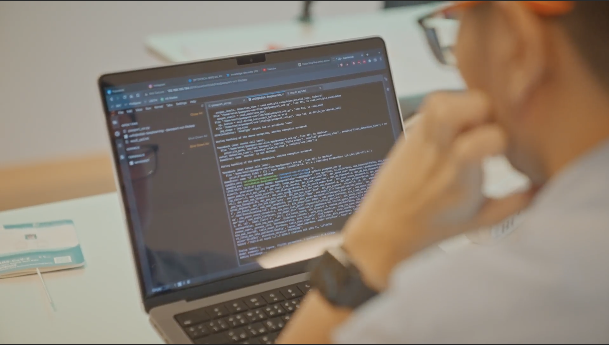

Skills

Machine Learning
I have 3 years of experience on computer vision such as Medical Imaging, License Plate Recognition, Documents OCR, Basic Classification Problems. This also includes Regression Problems, Decision Trees, Future Prediction, Face Detection, Human-Pose Recognition etc.
Web development
My project towards Web Development are built on React As a front-end frameworks, Node.JS as a backend which mostly use Firebase as a Non-SQL Database and Web Hosting, Supabase as a SQL database, and Rest API as a connector between front and back. I just started since 2022 and I am eagerly learning new aspect upon this field.

Data Analytics
As next year, I am graduated from B.Sc. Data Science, I have lots of classwork for data analytics from variety of datasets.

Programming
I have been coding in Python, Javascript for two years in several projects including Machine Learning and Web Development; also, some experience towards C++ and Java in class work.

 SKY ICT PCL.
SKY ICT PCL.